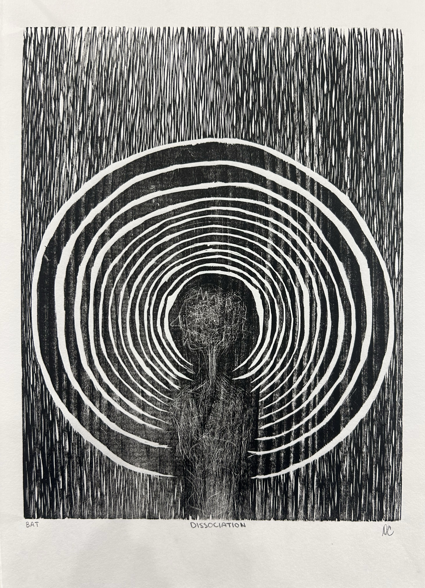
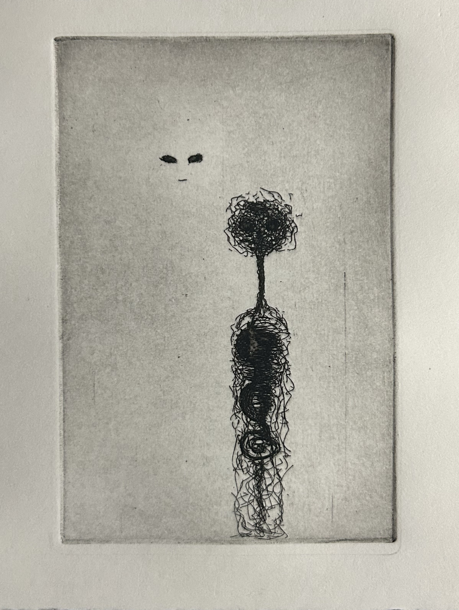
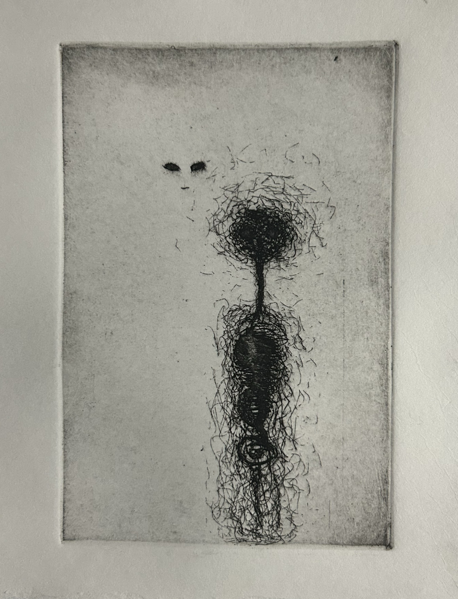
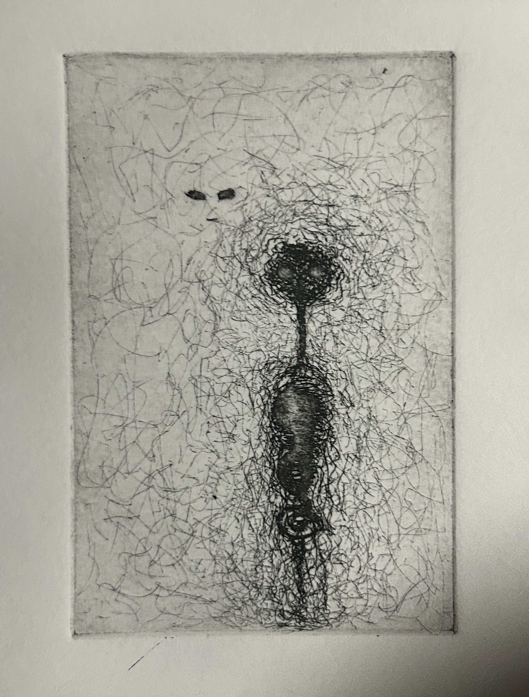
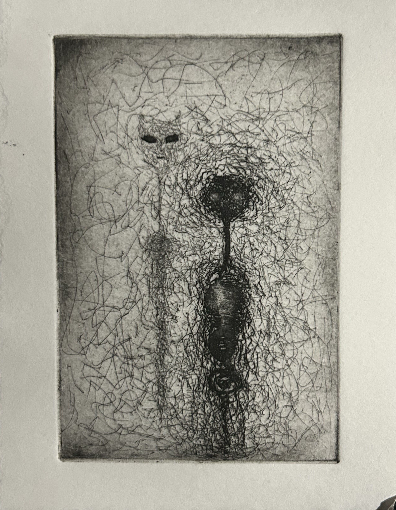

The Art of Coping
I’ve had a long journey with mental health, and one of my most beneficial coping mechanisms has been art. It gives me a judgment-free space to express myself, release emotions, and better understand my own thoughts and conscience.
I began exploring mental health more openly in my artwork last semester, and during my advanced printshop class this year, I’ve decided to create a dedicated series of prints that reflect mental health through visual art. My main purpose for this series is to let others who struggle with mental health know they are not alone—there is strength in acknowledging what we feel, and comfort in knowing that others feel it too.
Dissociation, woodcut relief print, basic printshop spring 2025

Looming, etching, basic printshop spring 2025
Layer one
Layer two
Layer three
Layer four